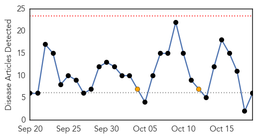
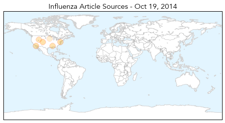

MERS
30-Day Web Trend
0 alerts, 0 warnings

30-Day Twitter Trend
4 alerts, 0 warnings

Article Locations

Article Confidences

Top Articles:
Top Tweets:
- 0.558
- AFD Blog `Saudi MOH Announces 2 More MERS-Cov Cases' http://t.co/RCBa75PVXF
Influenza
30-Day Web Trend
0 alerts, 2 warnings

30-Day Twitter Trend
1 alerts, 0 warnings

Article Locations
Article Confidences
Top Articles:
- 0.996
- This year's more virulent Enterovirus seems on the wane
- 0.995
- This year's more virulent Eterovirus seems on the wane
- 0.986
- The flu pandemic that came to Washington in 1918 killed 2,800, sickened many more
- 0.918
- Take precautions for enterovirus, flu
- 0.832
- Flu Shots Can Protect You This Season
- 0.512
- News, Sports, Jobs - The Journal, New Ulm, MN
Top Tweets:
-
No tweets found for Oct 19, 2014